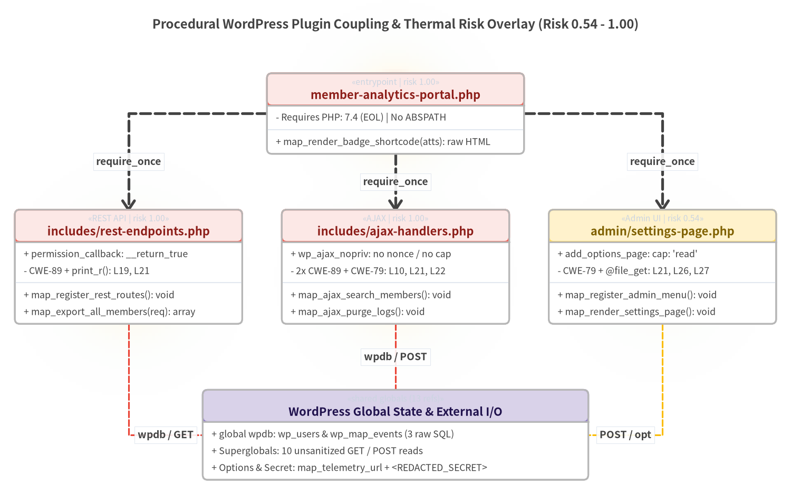
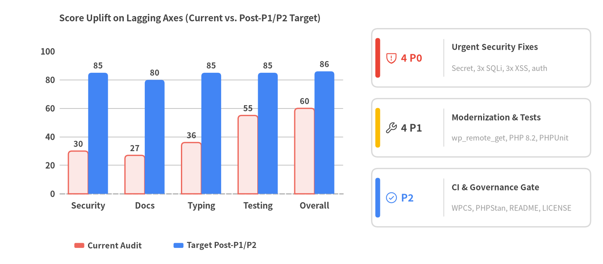
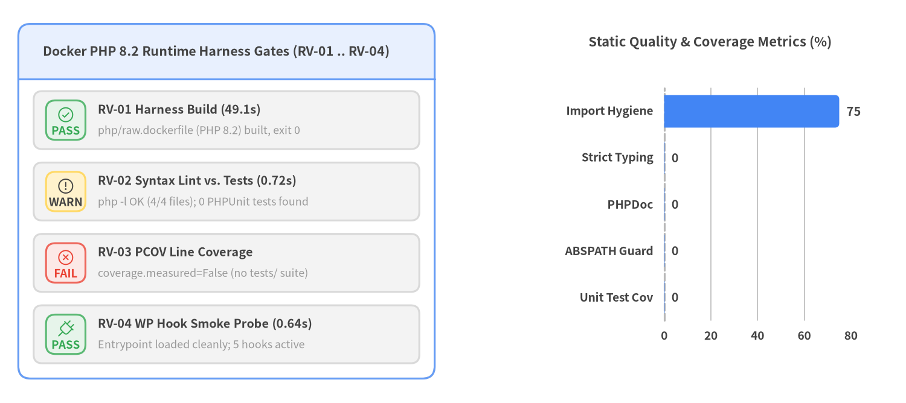

PNI Software Health Diagnostic Report
Member Analytics Portal (wp_plugin_messy v1.3.0) — WordPress Plugin Audit

Source Code
from drawlib.canvas import save, setup
from drawlib.icons import phosphor
from drawlib.smartarts import KpiCards, Panel
from drawlib.styles import Colors, Styles
from drawlib.utils import draw_pni_logo
setup(width=146, height=68, dpi=150)
hero = Panel(
text="PNI501 Diagnostic Scorecard — Member Analytics Portal (v1.3.0)",
description="",
style=Styles.Neutral.patch(shape_r=2.0, shape_fill_color=Colors.White, shape_line_color=Colors.Gray4),
header_style=Styles.PrimaryFlat.patch(shape_r=2.0),
text_style=Styles.WhiteBold.patch(text_size=12.0),
header_variant="filled",
header_height=13.5,
header_align="left",
)
hero.draw((3.0, 4.0), width=140.0, height=60.0)
draw_pni_logo((135.5, 57.2), width=8.5, dark=True)
primary_kpis = KpiCards(
style=Styles.Neutral.patch(shape_r=1.5, shape_fill_color=Colors.Gray1, shape_line_color=Colors.Gray3),
metric_style=Styles.DarkBold.patch(text_size=14.0),
text_style=Styles.DarkBold.patch(text_size=10.0),
description_style=Styles.Muted.patch(text_size=9.2),
accent_position="top_bar",
metric_layout="top_stack",
spacing=3.0,
)
primary_kpis.add(
"60 / 100",
"Overall Score (Grade C)",
"Baseline 70 | AI -10pt",
accent_style=Styles.WarningFlat,
metric_style=Styles.WarningBold.patch(text_size=14.0),
icon=phosphor.chart_bar,
icon_style=Styles.Warning,
)
primary_kpis.add(
"30 / 100",
"Security Axis (Grade D)",
"5 HIGH CWE + 1 Secret",
accent_style=Styles.DangerFlat,
metric_style=Styles.DangerBold.patch(text_size=14.0),
icon=phosphor.shield_warning,
icon_style=Styles.Danger,
)
primary_kpis.add(
"0 / 16",
"Applicable Rules Passed",
"12 FAIL | 4 WARN | 1 N/A",
accent_style=Styles.DangerFlat,
metric_style=Styles.DangerBold.patch(text_size=14.0),
icon=phosphor.list_checks,
icon_style=Styles.Danger,
)
primary_kpis.add(
"15 Total",
"Audit Findings",
"4 CRIT | 10 HIGH | 1 MED",
accent_style=Styles.PrimaryFlat,
metric_style=Styles.PrimaryBold.patch(text_size=14.0),
icon=phosphor.warning_octagon,
icon_style=Styles.Primary,
)
primary_kpis.draw((6.0, 25.0), width=134.0, height=22.0, columns=4)
meta_kpis = KpiCards(
style=Styles.PrimaryNeutral.patch(shape_r=1.5, shape_line_color=Colors.Gray3),
metric_style=Styles.PrimaryBold.patch(text_size=11.0),
text_style=Styles.DarkBold.patch(text_size=9.8),
description_style=Styles.Muted.patch(text_size=8.8),
accent_position="left_pill",
metric_layout="left_column",
metric_width_ratio=0.31,
spacing=3.0,
)
meta_kpis.add(
"4 Files",
"Codebase (84 LOC)",
"7 funcs, 0 classes, 0 tests",
accent_style=Styles.PrimaryFlat,
)
meta_kpis.add(
"PHP 8.2",
"Runtime Smoke OK",
"php -l OK; 5 hooks loaded",
accent_style=Styles.SuccessFlat,
metric_style=Styles.SuccessBold.patch(text_size=11.0),
)
meta_kpis.add(
"0 CVEs",
"Declared App CVEs",
"Raw PHP (harness OS excl.)",
accent_style=Styles.SecondaryFlat,
metric_style=Styles.SecondaryBold.patch(text_size=11.0),
)
meta_kpis.draw((6.0, 7.5), width=134.0, height=14.5, columns=3)
save()
Audit Identification & Provenance
| Attribute | Value |
|---|---|
| Project / Plugin Name | Member Analytics Portal (wp_plugin_messy v1.3.0) |
| Target Directory | examples/php/wp_plugin_messy |
| Primary Language & Framework | PHP (declared Requires PHP: 7.4 EOL; tested on PHP 8.2) / WordPress Plugin |
| Workflow & Run ID | php_wp_plugin_messy / wf-3389d5e7 (category=audit, scope=repo) |
| Evaluated At (UTC) | 2026-11-22T11:29:03.792183+00:00 |
| Git Provenance | main@d1e02277 (dirty) |
| Overall Health Score | 60 / 100 (Grade C) (Deterministic Baseline: 70 -> AI Adjustment: −10pt) |
| Security Axis Score | 30 / 100 (Grade D) (5 HIGH CWE sinks, 1 hardcoded secret, 4/5 unauthenticated endpoints) |
| Rule Compliance Rate | 0 / 16 applicable rules passed (12 FAIL, 4 WARN, 1 NOT_APPLICABLE of 17 evaluated) |
| Findings Distribution | 15 total findings across 11 unique locations (4 CRITICAL, 10 HIGH, 1 MEDIUM) |
1. Executive Summary
wp_plugin_messy (Member Analytics Portal v1.3.0) achieves an overall health score of 60/100 (Grade C), driven down by severe, systemic WordPress security failures (Security 30/100 — Grade D), minimal documentation (27/100 — Grade D), zero static typing (36/100 — Grade D), and zero automated tests (55/100 — Grade C).

Source Code
from drawlib.canvas import save, setup
from drawlib.charts.radar import RadarChart
from drawlib.icons import phosphor
from drawlib.smartarts import KpiCards
from drawlib.styles import Colors, Styles
setup(width=146, height=74, dpi=150)
radar = RadarChart(
categories=[
"Architecture",
"Code Quality",
"Typing",
"Testing",
"Dependencies",
"Security",
"Docs",
],
axis_line_style=Styles.MutedDashed,
axis_text_style=Styles.DarkBold.patch(text_size=10.0),
grid_style=Styles.MutedThin,
radius=20.0,
width=74.0,
height=60.0,
min_value=0.0,
max_value=100.0,
levels=4,
grid_shape="polygon",
title="7-Axis Engineering Health Profile",
title_style=Styles.DarkBold.patch(text_size=11.5),
)
radar.add_series(
"Deterministic Baseline (70)",
[100, 100, 46, 65, 100, 40, 37],
style=Styles.SecondaryNeutral,
fill_alpha=0.18,
line_style="dashed",
)
radar.add_series(
"Final Score (60 / Grade C)",
[90, 90, 36, 55, 90, 30, 27],
style=Styles.PrimaryFlat,
fill_alpha=0.28,
)
radar.draw(xy=(2.0, 10.0))
radar.draw_legend(
xy=(7.0, 4.5),
text_style=Styles.DarkBold.patch(text_size=9.5),
orientation="horizontal",
item_gap=5.5,
)
kpis = KpiCards(
style=Styles.Neutral.patch(shape_r=1.5, shape_fill_color=Colors.White, shape_line_color=Colors.Gray3),
metric_style=Styles.DarkBold.patch(text_size=12.0),
text_style=Styles.DarkBold.patch(text_size=10.0),
description_style=Styles.Muted.patch(text_size=8.8),
accent_position="left_pill",
metric_layout="left_column",
metric_width_ratio=0.27,
spacing=2.6,
)
kpis.add(
"60/100",
"Overall Health (Grade C)",
"0/16 rules passed (12 FAIL, 4 WARN)",
accent_style=Styles.WarningFlat,
metric_style=Styles.WarningBold.patch(text_size=12.0),
icon=phosphor.chart_bar,
icon_style=Styles.Warning,
)
kpis.add(
"30/100",
"Critical Security Exposure",
"3x CWE-89 SQLi, 2x CWE-79 XSS, 1 secret",
accent_style=Styles.DangerFlat,
metric_style=Styles.DangerBold.patch(text_size=12.0),
icon=phosphor.shield_warning,
icon_style=Styles.Danger,
)
kpis.add(
"0 / 0",
"PHPUnit Tests & Coverage",
"php -l & 5 WP hooks pass; 0% cov",
accent_style=Styles.DangerFlat,
metric_style=Styles.DangerBold.patch(text_size=12.0),
icon=phosphor.bug,
icon_style=Styles.Danger,
)
kpis.add(
"0 CVEs",
"Declared App Dependencies",
"Raw PHP; harness OS CVEs excluded",
accent_style=Styles.PrimaryFlat,
metric_style=Styles.PrimaryBold.patch(text_size=12.0),
icon=phosphor.lock,
icon_style=Styles.Primary,
)
kpis.draw((79.0, 6.0), width=64.0, height=62.0, columns=1)
save()
Executive Synthesis
While isolated PHP 8.2 runtime syntax checks (php -l) and WordPress hook loading (5 registered hooks) succeeded cleanly and Trivy SCA reported 0 declared Composer application CVEs, deterministic SAST, tree-sitter AST inspection, and qualitative WordPress security review exposed critical, immediately exploitable vulnerabilities across all four plugin files:
- Hardcoded Credential Leak (
CRITICAL):includes/rest-endpoints.php:3assigns a live-style webhook secret (<REDACTED_SECRET>) directly to global$map_webhook_secret. - Unauthenticated SQL Injection & PII Exfiltration (
CRITICAL):GET /wp-json/member-analytics/v1/exportsets'permission_callback' => '__return_true'and interpolates raw$_GET['role_filter']into a$wpdb->usersquery (plus a?debugprint_r()leak), whilewp_ajax_nopriv_map_search_membersexposeswp_usersto unauthenticated$_POST['term']SQL injection (CWE-89). - Destructive Log Purge, CSRF & Reflected XSS (
CRITICAL/HIGH):map_ajax_purge_logsexecutes an unparameterizedDELETE FROM wp_map_eventswithoutcheck_ajax_referer()orcurrent_user_can('manage_options')and echoes raw$_POST['category'](CWE-79).admin/settings-page.phpgrants access to subscriber-level'read'capability, mutatesmap_telemetry_urlwithout nonces, invokes unbounded@file_get_contents(), and echoes raw$_GET['tab']. The[member_analytics_badge]shortcode inmember-analytics-portal.phpreflects raw$_GET['badge_label']into HTML without escaping, and none of the 4 files enforcedefined('ABSPATH') || exit.

Source Code
from drawlib.canvas import save, setup
from drawlib.icons import phosphor
from drawlib.smartarts import CardList, Panel
from drawlib.styles import Colors, Styles
setup(width=146, height=68, dpi=150)
left_panel = Panel(
text="Verified Strengths & Baseline Signals",
style=Styles.Neutral.patch(shape_r=2.0, shape_fill_color=Colors.White, shape_line_color=Colors.Gray4),
header_style=Styles.SuccessNeutral.patch(shape_r=2.0),
text_style=Styles.DarkBold.patch(text_size=11.0),
header_variant="filled",
header_height=9.5,
)
left_panel.draw((3.0, 4.0), width=68.0, height=60.0)
strengths = CardList(
style=Styles.Neutral.patch(shape_r=1.5, shape_fill_color=Colors.Gray1, shape_line_color=Colors.Gray3),
text_style=Styles.DarkBold.patch(text_size=10.0),
description_style=Styles.Muted.patch(text_size=9.5),
badge_shape="rounded_rect",
badge_style=Styles.SuccessNeutral,
badge_text_style=Styles.SuccessBold.patch(text_size=9.5),
direction="vertical",
spacing=2.6,
)
strengths.add(
"Clean 4-File Responsibility Split",
"Separates bootstrap, REST, AJAX, and admin UI cleanly",
badge_text="PASS",
icon=phosphor.folder_open,
icon_style=Styles.Success,
)
strengths.add(
"Acyclic & Compact Modules",
"0 circular includes; every file stays compact (11-31 LOC)",
badge_text="PASS",
icon=phosphor.check_circle,
icon_style=Styles.Success,
)
strengths.add(
"PHP 8.2 Lint & 5-Hook Smoke OK",
"All 4 files pass php -l; plugin loads with 5 WP hooks",
badge_text="PASS",
icon=phosphor.terminal,
icon_style=Styles.Success,
)
strengths.draw((6.0, 7.0), width=62.0, height=45.0)
right_panel = Panel(
text="Top Risks Requiring Immediate P0 Action",
style=Styles.Neutral.patch(shape_r=2.0, shape_fill_color=Colors.White, shape_line_color=Colors.Gray4),
header_style=Styles.DangerNeutral.patch(shape_r=2.0),
text_style=Styles.DarkBold.patch(text_size=11.0),
header_variant="filled",
header_height=9.5,
)
right_panel.draw((75.0, 4.0), width=68.0, height=60.0)
risks = CardList(
style=Styles.Neutral.patch(shape_r=1.5, shape_fill_color=Colors.Gray1, shape_line_color=Colors.Gray3),
text_style=Styles.DarkBold.patch(text_size=10.0),
description_style=Styles.Muted.patch(text_size=8.8),
badge_shape="rounded_rect",
badge_style=Styles.DangerNeutral,
badge_text_style=Styles.DangerBold.patch(text_size=9.5),
direction="vertical",
spacing=2.6,
)
risks.add(
"Hardcoded Webhook Secret (L3)",
"map_webhook_secret (<REDACTED>) in rest-endpoints",
badge_text="CRIT",
icon=phosphor.key,
icon_style=Styles.Danger,
)
risks.add(
"Unauth REST & AJAX SQLi (CWE-89)",
"__return_true + wp_ajax_nopriv leak wp_users",
badge_text="CRIT",
icon=phosphor.database,
icon_style=Styles.Danger,
)
risks.add(
"DELETE SQLi, CSRF & 3x XSS",
"No nonces/manage_options; raw POST/GET echo",
badge_text="CRIT",
icon=phosphor.shield_warning,
icon_style=Styles.Danger,
)
risks.draw((78.0, 7.0), width=62.0, height=45.0)
save()
Headline Verification Snapshot
| Verification Domain | Status | Key Observed Telemetry |
|---|---|---|
| Overall Health & Compliance | Grade C (60/100) | 0/16 applicable rules passed (12 FAIL, 4 WARN, 1 N/A); 15 findings (4 CRIT, 10 HIGH, 1 MED) |
| Lowest Audit Steps | All Grade D | php_test_audit 10/100, security_vulnerability_audit 14/100, php_ast_audit 16/100 |
| Container Runtime Verification | Passed (Smoke Only) | Docker PHP 8.2 build passed (49.1s), php -l passed, tests 0/0 (line_cov=N/A), WP 5-hook smoke passed |
| Security & Supply Chain | SAST FAIL / SCA 0 CVEs | 0 declared Composer CVEs, 0 IaC misconfigs (harness OS CVEs isolated); 1 hardcoded secret, 5 HIGH CWE sinks |
| Approved Audit Plan | Auto-Approved | Auto-approved via --auto-approve or plan_gate=false. |
2. Architecture & Source Code Structure
Member Analytics Portal (wp_plugin_messy v1.3.0) follows a Procedural Flat WordPress Plugin layout across 4 PHP files (84 total LOC, 7 procedural functions, 0 classes). While file inclusion is strictly acyclic, every handler couples directly to global WordPress database handles ($wpdb) and raw HTTP superglobals ($_GET, $_POST) without OOP/PSR-4 boundaries, sanitization middleware, or authorization guards.

Source Code
from drawlib.canvas import save, setup
from drawlib.smartarts import Panel, Table, TreeNode
from drawlib.styles import Colors, Styles
setup(width=146, height=64, dpi=150)
left = Panel(
text="Directory Tree (wp_plugin_messy)",
style=Styles.Neutral.patch(shape_r=2.0, shape_fill_color=Colors.White, shape_line_color=Colors.Gray4),
header_style=Styles.PrimaryNeutral.patch(shape_r=2.0),
text_style=Styles.DarkBold.patch(text_size=10.5),
header_variant="filled",
header_height=9.0,
)
left.draw((3.0, 4.0), width=58.0, height=56.0)
tree_text = Styles.Dark.patch(text_size=9.5)
tree_bold = Styles.PrimaryBold.patch(text_size=10.0)
tree_line = Styles.MutedThin
root = TreeNode(
"wp_plugin_messy/ (84 LOC)",
text_style=tree_bold,
line_style=tree_line,
line_horizontal_margin=2.5,
line_horizontal_length=4.0,
line_vertical_margin=5.6,
children=[
TreeNode("member-analytics-portal.php (11)", text_style=tree_text, line_style=tree_line),
TreeNode("README.md (2 lines)", text_style=Styles.Muted.patch(text_size=9.5), line_style=tree_line),
TreeNode(
"includes/",
text_style=Styles.DarkBold.patch(text_size=9.5),
line_style=tree_line,
line_horizontal_margin=2.5,
line_horizontal_length=4.0,
line_vertical_margin=5.6,
children=[
TreeNode("rest-endpoints.php (21)", text_style=tree_text, line_style=tree_line),
TreeNode("ajax-handlers.php (21)", text_style=tree_text, line_style=tree_line),
],
),
TreeNode(
"admin/",
text_style=Styles.DarkBold.patch(text_size=9.5),
line_style=tree_line,
line_horizontal_margin=2.5,
line_horizontal_length=4.0,
line_vertical_margin=5.6,
children=[
TreeNode("settings-page.php (31)", text_style=tree_text, line_style=tree_line),
],
),
],
)
root.draw((7.0, 47.0))
right = Panel(
text="Grounded Module Inventory & Hotspot Risk",
style=Styles.Neutral.patch(shape_r=2.0, shape_fill_color=Colors.White, shape_line_color=Colors.Gray4),
header_style=Styles.Neutral.patch(shape_r=2.0),
text_style=Styles.DarkBold.patch(text_size=10.5),
header_variant="filled",
header_height=9.0,
)
right.draw((64.0, 4.0), width=79.0, height=56.0)
tbl = Table(
cell_style=Styles.Neutral.patch(shape_fill_color=Colors.White),
text_style=Styles.Dark.patch(text_size=9.5),
header_cell_style=Styles.PrimaryNeutral,
header_text_style=Styles.DarkBold.patch(text_size=9.5),
border_style=Styles.MutedThin,
has_header=True,
)
data = [
["Module File", "LOC", "Public Callables", "Peak Risk"],
["member-analytics-\nportal.php", "11", "map_render_badge_\nshortcode", "1.00\n(4 HIGH)"],
["includes/\nrest-endpoints.php", "21", "map_register_rest_routes\nmap_export_all_members", "1.00\n(CRIT+HIGH)"],
["includes/\najax-handlers.php", "21", "map_ajax_search_members\nmap_ajax_purge_logs", "1.00\n(CRIT+3 HIGH)"],
["admin/\nsettings-page.php", "31", "map_register_admin_menu\nmap_render_settings_page", "0.54\n(2 HIGH)"],
]
tbl.draw_flexible(
xy=(66.5, 48.0),
column_widths=[25.0, 8.0, 27.0, 14.0],
row_heights=[6.5, 8.5, 9.0, 9.0, 9.0],
data=data,
align="top_left",
)
save()
Procedural Hook Coupling & Thermal Risk Overlay
The dependency diagram below models the 4 procedural PHP modules alongside the shared WordPress global state surface ($wpdb, $_GET, $_POST, wp_options, and $map_webhook_secret), overlaid with normalized module_hotspots risk intensity (1.00 on includes/ajax-handlers.php, includes/rest-endpoints.php, and member-analytics-portal.php; 0.54 on admin/settings-page.php).

Source Code
from drawlib.canvas import save, setup
from drawlib.charts.heatmap import HeatmapOverlay
from drawlib.diagrams.class_diagram import ClassDiagram, ClassNode
from drawlib.styles import Colors, Styles
setup(width=160, height=102, dpi=150)
heat = HeatmapOverlay(
width=160.0,
height=102.0,
min_value=0.0,
max_value=1.0,
default_radius=20.0,
max_alpha=0.40,
show_contour_lines=False,
styles=[Styles.SuccessNeutral, Styles.WarningNeutral, Styles.DangerFlat],
)
heat.add_spot((80.0, 80.0), value=1.00, radius=19.0)
heat.add_spot((26.0, 46.0), value=1.00, radius=21.0)
heat.add_spot((80.0, 46.0), value=1.00, radius=21.0)
heat.add_spot((134.0, 46.0), value=0.54, radius=19.0)
heat.draw(xy=(0.0, 0.0))
cd = ClassDiagram(
node_style=Styles.Neutral.patch(shape_fill_color=Colors.White, shape_line_color=Colors.Gray5),
edge_style=Styles.DarkBold,
edge_text_style=Styles.DarkBold.patch(text_size=9.2),
title="Procedural WordPress Plugin Coupling & Thermal Risk Overlay (Risk 0.54 - 1.00)",
title_style=Styles.DarkBold.patch(text_size=11.5),
width=156.0,
height=98.0,
margin=4.0,
header_style=Styles.PrimaryNeutral,
)
entry = ClassNode(
"member-analytics-portal.php",
stereotype="entrypoint | risk 1.00",
width=52.0,
row_height=3.4,
style=Styles.Neutral.patch(shape_fill_color=Colors.White, shape_line_color=Colors.Gray5),
header_style=Styles.DangerNeutral,
)
entry.add_attribute("Requires PHP: 7.4 (EOL) | No ABSPATH", "", visibility="-")
entry.add_method("map_render_badge_shortcode", "atts", "raw HTML")
rest = ClassNode(
"includes/rest-endpoints.php",
stereotype="REST API | risk 1.00",
width=46.0,
row_height=3.4,
style=Styles.Neutral.patch(shape_fill_color=Colors.White, shape_line_color=Colors.Gray5),
header_style=Styles.DangerNeutral,
)
rest.add_attribute("permission_callback", "__return_true", visibility="+")
rest.add_attribute("CWE-89 + print_r()", "L19, L21", visibility="-")
rest.add_method("map_register_rest_routes", "", "void")
rest.add_method("map_export_all_members", "req", "array")
ajax = ClassNode(
"includes/ajax-handlers.php",
stereotype="AJAX | risk 1.00",
width=46.0,
row_height=3.4,
style=Styles.Neutral.patch(shape_fill_color=Colors.White, shape_line_color=Colors.Gray5),
header_style=Styles.DangerNeutral,
)
ajax.add_attribute("wp_ajax_nopriv", "no nonce / no cap", visibility="+")
ajax.add_attribute("2x CWE-89 + CWE-79", "L10, L21, L22", visibility="-")
ajax.add_method("map_ajax_search_members", "", "void")
ajax.add_method("map_ajax_purge_logs", "", "void")
admin = ClassNode(
"admin/settings-page.php",
stereotype="Admin UI | risk 0.54",
width=46.0,
row_height=3.4,
style=Styles.Neutral.patch(shape_fill_color=Colors.White, shape_line_color=Colors.Gray5),
header_style=Styles.WarningNeutral,
)
admin.add_attribute("add_options_page", "cap: 'read'", visibility="+")
admin.add_attribute("CWE-79 + @file_get", "L21, L26, L27", visibility="-")
admin.add_method("map_register_admin_menu", "", "void")
admin.add_method("map_render_settings_page", "", "void")
state = ClassNode(
"WordPress Global State & External I/O",
stereotype="shared globals (13 refs)",
width=78.0,
row_height=3.4,
style=Styles.Neutral.patch(shape_fill_color=Colors.White, shape_line_color=Colors.Gray5),
header_style=Styles.SecondaryNeutral,
)
state.add_attribute("global wpdb", "wp_users & wp_map_events (3 raw SQL)", visibility="+")
state.add_attribute("Superglobals", "10 unsanitized GET / POST reads", visibility="+")
state.add_attribute("Options & Secret", "map_telemetry_url + <REDACTED_SECRET>", visibility="+")
cd.add(entry, xy=(78.0, 77.0))
cd.add(rest, xy=(24.0, 46.0))
cd.add(ajax, xy=(78.0, 46.0))
cd.add(admin, xy=(132.0, 46.0))
cd.add(state, xy=(78.0, 12.0))
cd.connect(entry, rest, "dependency", label="require_once", start_side="left", end_side="top")
cd.connect(entry, ajax, "dependency", label="require_once", start_side="bottom", end_side="top")
cd.connect(entry, admin, "dependency", label="require_once", start_side="right", end_side="top")
cd.connect(rest, state, "association", label="wpdb / GET", start_side="bottom", end_side="left", style=Styles.DangerDashed)
cd.connect(ajax, state, "association", label="wpdb / POST", start_side="bottom", end_side="top", style=Styles.DangerDashed)
cd.connect(admin, state, "association", label="POST / opt", start_side="bottom", end_side="right", style=Styles.WarningDashed)
cd.draw(xy=(2.0, 2.0))
save()
Runtime Request & Attack Execution Flows
The plugin exposes 5 entry points across REST, admin-ajax.php, WordPress Admin Options, and frontend shortcodes. The diagram below traces the three primary request execution chains directly from untrusted HTTP input to database and browser sinks.

Source Code
from drawlib.canvas import save, setup
from drawlib.smartarts import CardList, Panel
from drawlib.styles import Colors, Styles
setup(width=146, height=74, dpi=150)
def draw_flow_lane(y_bottom: float, title: str, header_style, steps: list[tuple[str, str, str, object]]) -> None:
p = Panel(
text=title,
style=Styles.Neutral.patch(shape_r=1.8, shape_fill_color=Colors.White, shape_line_color=Colors.Gray4),
header_style=header_style.patch(shape_r=1.8),
text_style=Styles.DarkBold.patch(text_size=10.0),
header_variant="filled",
header_height=6.8,
)
p.draw((3.0, y_bottom), width=140.0, height=21.0)
cl = CardList(
style=Styles.Neutral.patch(shape_r=1.2, shape_fill_color=Colors.Gray1, shape_line_color=Colors.Gray3),
text_style=Styles.DarkBold.patch(text_size=9.5),
description_style=Styles.Muted.patch(text_size=9.0),
badge_shape="rounded_rect",
badge_style=Styles.PrimaryNeutral,
badge_text_style=Styles.DarkBold.patch(text_size=9.0),
direction="horizontal",
spacing=3.5,
show_arrows=True,
arrow_style=Styles.DarkBold,
)
for badge, heading, desc, b_style in steps:
t_style = Styles.WhiteBold.patch(text_size=8.0) if b_style == Styles.DangerFlat else Styles.DarkBold.patch(text_size=8.0)
cl.add(heading, desc, badge_text=badge, badge_style=b_style, badge_text_style=t_style)
cl.draw((5.5, y_bottom + 1.8), width=135.0, height=11.5)
draw_flow_lane(
50.0,
"Flow 1: Unauthenticated REST Member Export (includes/rest-endpoints.php)",
Styles.DangerNeutral,
[
("GET", "/wp-json/.../export", "No auth (__return_true)", Styles.DangerFlat),
("IN", "GET['role_filter']", "Raw unsanitized param", Styles.WarningNeutral),
("SQL", "wpdb->get_results()", "LIKE '%role_filter%'", Styles.DangerFlat),
("PII", "wp_users + print_r", "login, email, ?debug", Styles.DangerFlat),
],
)
draw_flow_lane(
26.5,
"Flow 2: AJAX Member Search & Event Log Purge (includes/ajax-handlers.php)",
Styles.DangerNeutral,
[
("REQ", "admin-ajax.php", "nopriv search / session", Styles.DangerFlat),
("GAP", "No Nonce / No Cap", "Missing check_ajax_ref", Styles.DangerFlat),
("SQL", "SELECT & DELETE SQL", "wp_users & wp_map_events", Styles.DangerFlat),
("XSS", "Raw echo POST", "Unescaped category HTML", Styles.WarningNeutral),
],
)
draw_flow_lane(
3.0,
"Flow 3: Admin Settings Mutation & Telemetry Ping (admin/settings-page.php)",
Styles.WarningNeutral,
[
("CAP", "Options Page ('read')", "Any WP subscriber", Styles.WarningNeutral),
("OPT", "POST telemetry_url", "No check_admin_referer", Styles.DangerFlat),
("I/O", "@file_get_contents()", "No timeout; silent err", Styles.WarningNeutral),
("XSS", "echo GET['tab']", "Plus raw <script src>", Styles.DangerFlat),
],
)
save()
Layer Architecture & Boundary Assessment
| Layer | Paths | Allowed Dependencies | Responsibility & Health Assessment |
|---|---|---|---|
| Plugin Bootstrap & Shortcode Entrypoint | member-analytics-portal.php |
REST, AJAX, Admin modules | Manual require_once loading, hook registration (rest_api_init, shortcode), and [member_analytics_badge] rendering. Missing ABSPATH guard; EOL PHP 7.4 header; $_GET['badge_label'] XSS. |
| REST Endpoint Module | includes/rest-endpoints.php |
(none) | Registers /wp-json/member-analytics/v1/export and queries $wpdb->users. Hardcoded $map_webhook_secret (<REDACTED_SECRET>), __return_true, CWE-89 SQLi, and print_r() debug leak. |
| AJAX Handler Module | includes/ajax-handlers.php |
(none) | Registers wp_ajax_nopriv_map_search_members and wp_ajax_map_purge_logs. Unparameterized SELECT/DELETE SQLi, missing nonces/capabilities, and unescaped echo XSS. |
| Admin Settings Module | admin/settings-page.php |
(none) | Registers WP options page ('read' cap), persists map_telemetry_url, pings https://telemetry.example.com/ping via @file_get_contents(), and renders inline HTML/JS. |
Pre-Sorted Module Hotspots (module_hotspots)
PNI aggregates both deterministic AST file paths (examples/php/wp_plugin_messy/...) and AI qualitative relative module paths; both exact hotspot records are preserved below in descending risk order:
| File Path | LOC | Risk Score | Findings | Top Rules / CWEs |
|---|---|---|---|---|
examples/php/wp_plugin_messy/includes/ajax-handlers.php |
21 | 1.00 | 3 HIGH | CWE-79, CWE-89 |
examples/php/wp_plugin_messy/includes/rest-endpoints.php |
21 | 1.00 | 1 CRIT, 1 HIGH | common/security, CWE-89 |
member-analytics-portal.php |
— | 1.00 | 4 HIGH | php/dependencies, common/security, common/runtime_verification, php/typing |
includes/rest-endpoints.php |
— | 0.90 | 2 CRIT | common/security, php/frameworks/wordpress |
examples/php/wp_plugin_messy/admin/settings-page.php |
31 | 0.54 | 1 HIGH | CWE-79 |
includes/ajax-handlers.php |
— | 0.45 | 1 CRIT | php/frameworks/wordpress |
admin/settings-page.php |
— | 0.28 | 1 HIGH | php/frameworks/wordpress |
examples/php/wp_plugin_messy/member-analytics-portal.php |
11 | 0.14 | 0 | (deterministic AST baseline) |
State, Storage & Concurrency Model
- Database State: Directly queries WordPress MySQL tables (
$wpdb->usersandwp_map_events) viaglobal $wpdbwithout$wpdb->prepare(). - Option Persistence: Mutates
wp_optionskeymap_telemetry_urlviaupdate_option()with unsanitized$_POST['map_telemetry_url']and zero CSRF verification. - Global Secret: Hardcodes
$map_webhook_secret = '<REDACTED_SECRET>'at module scope inincludes/rest-endpoints.php:3. - Error & Concurrency Model: Synchronous PHP request-per-process model under WordPress with silent failure suppression (
@file_get_contents()), unstructuredprint_r()debug dumps, and no defensive input validation or exception handling.
3. Recommended Remediation Roadmap
Remediation must execute in strict risk order: P0 immediately closes all active remote exploitation vectors (hardcoded secret, SQL injection, XSS, CSRF, broken access control, and direct file access), P1 modernizes runtime I/O, PHP 8.2+ strict typing, Composer PSR-4 packaging, and PHPUnit security regression tests, and P2 locks in CI/CD governance and developer documentation.

Source Code
from drawlib.canvas import save, setup
from drawlib.icons import phosphor
from drawlib.smartarts import Roadmap
from drawlib.styles import Colors, Styles
setup(width=146, height=68, dpi=150)
rm = Roadmap(
style=Styles.Neutral.patch(shape_r=1.8, shape_fill_color=Colors.White, shape_line_color=Colors.Gray4),
text_style=Styles.DarkBold.patch(text_size=10.5),
description_style=Styles.Muted.patch(text_size=8.8),
spine_style=Styles.PrimaryBold,
badge_style=Styles.PrimaryFlat,
badge_text_style=Styles.WhiteBold.patch(text_size=9.5),
direction="vertical",
card_shape="rounded_rect",
spacing=2.6,
)
rm.add(
"P0-A: Secret Rotation & Direct-Access Containment",
"Rotate map_webhook_secret (<REDACTED>); add ABSPATH guards to all 4 files; escape shortcode.",
badge_text="P0-A",
badge_style=Styles.DangerFlat,
icon=phosphor.key,
icon_style=Styles.Danger,
)
rm.add(
"P0-B: SQLi, XSS, CSRF & Access Control Hardening",
"Parameterize 3 SQL sinks with wpdb->prepare(); drop __return_true/nopriv; enforce nonces & esc_html().",
badge_text="P0-B",
badge_style=Styles.DangerFlat,
icon=phosphor.shield_check,
icon_style=Styles.Danger,
)
rm.add(
"P1: PHP 8.2 Strict Types, WP APIs & PHPUnit Suite",
"Use wp_remote_get(timeout=5); remove print_r(); adopt strict_types, PSR-4, wp_enqueue_script & PHPUnit.",
badge_text="P1",
badge_style=Styles.WarningFlat,
icon=phosphor.wrench,
icon_style=Styles.Warning,
)
rm.add(
"P2: CI/CD Governance, Static Gates & Documentation",
"Add GitHub Actions (WPCS, PHPStan, PHPUnit + PCOV), .gitignore, LICENSE, SECURITY.md & full README.",
badge_text="P2",
badge_style=Styles.PrimaryFlat,
icon=phosphor.rocket_launch,
icon_style=Styles.Primary,
)
rm.draw((4.0, 4.0), width=138.0, height=60.0)
save()
Projected Score Recovery & Workload Split
Completing the 4 urgent P0 security actions and 4 P1 modernization/testing actions directly addresses the four lowest-scoring audit dimensions (Security, Documentation, Typing, and Testing), raising the plugin from Grade C (60/100) into Grade A/B readiness.

Source Code
from drawlib.canvas import save, setup
from drawlib.charts.bar import BarChart
from drawlib.icons import phosphor
from drawlib.smartarts import KpiCards
from drawlib.styles import Colors, Styles
from drawlib.text import text
setup(width=146, height=64, dpi=150)
text(
(46.0, 59.5),
"Score Uplift on Lagging Axes (Current vs. Post-P1/P2 Target)",
style=Styles.DarkBold.patch(text_size=10.8),
)
bar = BarChart(
categories=["Security", "Docs", "Typing", "Testing", "Overall"],
axis_line_style=Styles.MutedDashed,
axis_text_style=Styles.DarkBold.patch(text_size=10.0),
grid_style=Styles.MutedThin,
width=80.0,
height=42.0,
bar_mode="group",
bar_r=0.8,
value_text_style=Styles.DarkBold.patch(text_size=9.5),
value_format="{:.0f}",
)
bar.add_series("Current Audit", [30.0, 27.0, 36.0, 55.0, 60.0], style=Styles.DangerNeutral)
bar.add_series("Target Post-P1/P2", [85.0, 80.0, 85.0, 85.0, 86.0], style=Styles.PrimaryFlat)
bar.draw(xy=(6.0, 12.0))
bar.draw_legend(
xy=(18.0, 4.5),
text_style=Styles.DarkBold.patch(text_size=9.5),
orientation="horizontal",
item_gap=6.0,
)
cards = KpiCards(
style=Styles.Neutral.patch(shape_r=1.5, shape_fill_color=Colors.White, shape_line_color=Colors.Gray3),
metric_style=Styles.DarkBold.patch(text_size=12.0),
text_style=Styles.DarkBold.patch(text_size=9.8),
description_style=Styles.Muted.patch(text_size=8.8),
accent_position="left_pill",
metric_layout="left_column",
metric_width_ratio=0.25,
spacing=2.8,
)
cards.add(
"4 P0",
"Urgent Security Fixes",
"Secret, 3x SQLi, 3x XSS, auth",
accent_style=Styles.DangerFlat,
metric_style=Styles.DangerBold.patch(text_size=12.0),
icon=phosphor.shield_warning,
icon_style=Styles.Danger,
)
cards.add(
"4 P1",
"Modernization & Tests",
"wp_remote_get, PHP 8.2, PHPUnit",
accent_style=Styles.WarningFlat,
metric_style=Styles.WarningBold.patch(text_size=12.0),
icon=phosphor.wrench,
icon_style=Styles.Warning,
)
cards.add(
"P2",
"CI & Governance Gate",
"WPCS, PHPStan, README, LICENSE",
accent_style=Styles.PrimaryFlat,
metric_style=Styles.PrimaryBold.patch(text_size=12.0),
icon=phosphor.check_circle,
icon_style=Styles.Primary,
)
cards.draw((90.0, 9.0), width=53.0, height=48.0, columns=1)
save()
Action Plan Traceability Matrix (P0 -> P1 -> P2)
All 8 pre-sorted remediation actions from action_plan are traced directly to target files, rule IDs, and CWEs below (followed by the recommended P2 governance and documentation milestone):
| # | Priority | Action Title & Category | Target Files | Expected Impact | Related Rules / CWEs |
|---|---|---|---|---|---|
| 1 | P0 | Add ABSPATH guard and escape shortcode output (security) |
member-analytics-portal.php |
Eliminates reflected XSS in [member_analytics_badge] and blocks direct script execution. |
common/security |
| 2 | P0 | Eliminate SQLi, XSS, CSRF, and broken access control across REST, AJAX, and Admin handlers (security) |
includes/rest-endpoints.php, includes/ajax-handlers.php, admin/settings-page.php, member-analytics-portal.php |
Neutralizes all 5 HIGH CWE-89/CWE-79 sinks, unauthenticated PII export, and destructive log purge. |
php/frameworks/wordpress, common/security_vulnerability, CWE-89, CWE-79, CWE-352, CWE-862 |
| 3 | P0 | Remediate all CWE-89 SQLi, CWE-79 XSS, hardcoded secret, and unauthenticated REST/AJAX endpoints (security) |
includes/rest-endpoints.php, includes/ajax-handlers.php, admin/settings-page.php, member-analytics-portal.php |
Eliminates remote SQL injection, wp_users exfiltration, arbitrary log deletion, and XSS across all endpoints. |
common/security_vulnerability, SEC-03, SEC-04, SEC-05, CWE-89, CWE-79 |
| 4 | P0 | Remove hardcoded $map_webhook_secret (<REDACTED_SECRET>) and externalize via wp-config/env (security) |
includes/rest-endpoints.php |
Eliminates CRITICAL credential exposure in source code and enforces secret rotation. | common/security, common/supply_chain |
| 5 | P1 | Replace @file_get_contents with timeout-bounded wp_remote_get and remove print_r (code_quality) |
admin/settings-page.php, includes/rest-endpoints.php |
Eliminates hung PHP worker threads, silent failure suppression, and ?debug data leaks. |
common/production_readiness, common/twelve_factor |
| 6 | P1 | Adopt Composer PSR-4 packaging, PHP 8.2+, and CI governance (dependencies) |
member-analytics-portal.php |
Transitions from unmanaged EOL PHP 7.4 raw includes to modern PHP 8.2+/8.3+ Composer & CI supply-chain controls. | php/dependencies, php/modern_stack, common/supply_chain |
| 7 | P1 | Add PHPUnit + WP_Mock/Brain Monkey security regression test suite with PCOV coverage (testing) |
member-analytics-portal.php, includes/rest-endpoints.php, includes/ajax-handlers.php, admin/settings-page.php |
Establishes automated regression verification for capability checks, nonces, SQL preparation, and escaping. | common/runtime_verification |
| 8 | P1 | Modernize to PHP 8.2+ strict_types, PSR-4 classes, wp_remote_get, and wp_enqueue_script (typing) |
member-analytics-portal.php, admin/settings-page.php |
Eliminates silent scalar coercion, unbounded HTTP calls, and hardcoded <script src=...> tags. |
php/typing, php/code_quality, php/modern_stack, php/frameworks/wordpress |
| 9 | P2 | Complete README.md, PHPDoc coverage, .gitignore, LICENSE, SECURITY.md, & GitHub Actions WPCS/PHPStan (governance) |
README.md, .github/workflows/*, composer.json |
Closes remaining common/documentation, common/git_workflow, and common/supply_chain gaps. |
common/documentation, common/git_workflow, common/supply_chain |
4. Audit Pipeline (DAG), Standards & Findings
This chapter documents the exact executed audit pipeline, deterministic tooling scope, 7-axis score anchoring (±10pt deterministic-to-AI guardrail), full rule compliance matrix, consolidated evidence index, and machine-readable artifact provenance.

Source Code
from drawlib.canvas import save, setup
from drawlib.graph import LayerGraph
from drawlib.lines import lines
from drawlib.shapes import rectangle
from drawlib.styles import Styles
from drawlib.text import text
setup(width=198, height=84, dpi=150)
text(
(99.0, 79.5),
"Executed Audit Pipeline DAG — php_wp_plugin_messy (wf-3389d5e7)",
style=Styles.DarkBold.patch(text_size=12.0),
)
g = LayerGraph(
direction="LR",
rank_sep=7.2,
node_sep=3.2,
edge_routing="orthogonal",
default_node_width=25.5,
default_node_height=11.0,
)
g.edge("confirm_plan", "repo_and_deps")
g.edge("repo_and_deps", "ast_and_quality")
g.edge("repo_and_deps", "supply_chain")
g.edge("repo_and_deps", "runtime_verification")
g.edge("repo_and_deps", "security_audit")
g.edge("ast_and_quality", "arch_prr_tests")
g.edge("arch_prr_tests", "output_score")
g.edge("supply_chain", "output_score")
g.edge("runtime_verification", "output_score")
g.edge("security_audit", "output_score")
g.edge("output_score", "create_report")
layout = g.get_layout(width=198.0, height=74.0, margin=5.0)
# Align arch_prr_tests with ast_and_quality (top row) so lower bypass buses stay clear
dy_align = layout["ast_and_quality"].y - layout["arch_prr_tests"].y
layout.offset("arch_prr_tests", dy=dy_align)
bus_in_x = (layout["repo_and_deps"].right + layout["ast_and_quality"].left) / 2.0
bus_out_x = (layout["arch_prr_tests"].right + layout["output_score"].left) / 2.0
def connect_ortho(src_id: str, dst_id: str, mid_x: float | None = None) -> None:
s = layout[src_id]
d = layout[dst_id]
y_shift = 4.5
if abs(s.y - d.y) < 0.2:
pts = [(s.right, s.y + y_shift), (d.left, d.y + y_shift)]
else:
mx = mid_x if mid_x is not None else (s.right + d.left) / 2.0
pts = [(s.right, s.y + y_shift), (mx, s.y + y_shift), (mx, d.y + y_shift), (d.left, d.y + y_shift)]
lines(pts, arrow_head="->", style=Styles.MutedBold)
connect_ortho("confirm_plan", "repo_and_deps")
for mid_id in ["ast_and_quality", "supply_chain", "runtime_verification", "security_audit"]:
connect_ortho("repo_and_deps", mid_id, mid_x=bus_in_x)
connect_ortho("ast_and_quality", "arch_prr_tests")
connect_ortho("arch_prr_tests", "output_score", mid_x=bus_out_x)
for bypass_id in ["supply_chain", "runtime_verification", "security_audit"]:
connect_ortho(bypass_id, "output_score", mid_x=bus_out_x)
connect_ortho("output_score", "create_report")
nodes_spec = [
("confirm_plan", "[ASK] Confirm Plan\nPlan approved", Styles.SuccessNeutral, Styles.DarkBold),
("repo_and_deps", "[HYBRID] Repo/Deps\n4 src, 0 test, 0 dep", Styles.PrimaryNeutral, Styles.DarkBold),
("ast_and_quality", "[HYBRID] PHP AST\n5 HIGH CWE, 16 WP", Styles.PrimaryNeutral, Styles.DarkBold),
("supply_chain", "[AI] Supply Chain\n3 rules; 1 secret", Styles.SecondaryNeutral, Styles.DarkBold),
("runtime_verification", "[HYBRID] Runtime\nphp -l & 5-hook OK", Styles.PrimaryNeutral, Styles.DarkBold),
("security_audit", "[HYBRID] Trivy/Sec\n0 app CVEs, 5 sinks", Styles.PrimaryNeutral, Styles.DarkBold),
("arch_prr_tests", "[AI] Arch/PRR/Test\n4 layers; 0 PHPUnit", Styles.SecondaryNeutral, Styles.DarkBold),
("output_score", "[AI] Emit Score\n60/100 (C) | 15 find", Styles.PrimaryFlat, Styles.WhiteBold),
("create_report", "[AI] Report Build\n7-ch EN/JA Drawlib", Styles.Neutral, Styles.DarkBold),
]
for nid, label, box_style, txt_style in nodes_spec:
n = layout[nid]
rectangle(
(n.x, n.y + 4.5),
width=n.width,
height=n.height,
style=box_style.patch(shape_r=1.6),
text=label,
text_style=txt_style.patch(text_size=8.4),
)
legend_items = [
(31.0, "[ASK] Plan Gate", Styles.SuccessNeutral, Styles.DarkBold),
(76.0, "[HYBRID] Det. Tool + AI", Styles.PrimaryNeutral, Styles.DarkBold),
(122.0, "[AI] Qualitative Synthesis", Styles.SecondaryNeutral, Styles.DarkBold),
(167.0, "Focal: Score Output", Styles.PrimaryFlat, Styles.WhiteBold),
]
for lx, ltxt, lstyle, ltstyle in legend_items:
rectangle(
(lx, 5.0),
width=38.0,
height=5.2,
style=lstyle.patch(shape_r=1.2),
text=ltxt,
text_style=ltstyle.patch(text_size=8.8),
)
save()
Inspection Scope & Deterministic Tools Executed
| Scope Parameter | Audited Value |
|---|---|
| Target Root & Paths | examples/php/wp_plugin_messy (source=['.'], tests=['tests'], docs=['README.md'], exclude=[]) |
| Languages & Frameworks | Primary: php · Companions: none · Detected Frameworks: wordpress |
| Git Provenance | main@d1e02277 (dirty) |
| Deterministic Tools Executed | project_inspect (php), tree-sitter AST (php), container runtime harness (docker: php/raw.dockerfile), Trivy (docker: fs+image) |
| Logical DAG Stages | 11 pipeline stages (confirm_plan, repo_and_deps, supply_chain, ast_and_quality, runtime_verification, security_audit, arch_recording, service_readiness, test_health, output_score, create_report) — 0 stages skipped |
7-Axis Deterministic Baseline vs. AI Adjustment (±10pt)
PNI computes deterministic baseline scores directly from AST, runtime, and SCA facts, then caps qualitative AI adjustments strictly within ±10pt per axis. Across wp_plugin_messy, systemic WordPress security gaps, missing typing/tests, and raw PHP debt warranted a consistent -10pt adjustment on every axis (70 -> 60).

Source Code
from drawlib.canvas import save, setup
from drawlib.charts.bar import BarChart
from drawlib.styles import Styles
from drawlib.text import text
setup(width=146, height=64, dpi=150)
text(
(73.0, 59.5),
"7-Axis Deterministic Baseline vs. Final Score (Overall: 70 -> 60)",
style=Styles.DarkBold.patch(text_size=11.5),
)
chart = BarChart(
categories=[
"Architecture",
"Code Quality",
"Typing",
"Testing",
"Dependencies",
"Security",
"Docs",
],
axis_line_style=Styles.MutedDashed,
axis_text_style=Styles.DarkBold.patch(text_size=10.0),
grid_style=Styles.MutedThin,
width=134.0,
height=39.0,
bar_mode="group",
bar_r=0.8,
value_text_style=Styles.DarkBold.patch(text_size=9.5),
value_format="{:.0f}",
)
chart.add_series("Deterministic Baseline", [100.0, 100.0, 46.0, 65.0, 100.0, 40.0, 37.0], style=Styles.SecondaryNeutral)
chart.add_series("Final Score (-10pt AI Delta)", [90.0, 90.0, 36.0, 55.0, 90.0, 30.0, 27.0], style=Styles.PrimaryFlat)
chart.draw(xy=(8.0, 12.0))
chart.draw_legend(
xy=(44.0, 4.0),
text_style=Styles.DarkBold.patch(text_size=10.0),
orientation="horizontal",
item_gap=8.0,
)
save()
| Axis | Baseline | AI Δ | Final | Grade | Anchoring Rationale |
|---|---|---|---|---|---|
| Architecture | 100 | −10 | 90 | A | Acyclic 4-file inclusion, but global procedural functions, manual require_once, and 13 direct superglobal/global $wpdb accesses with zero OOP/PSR-4 boundaries. |
| Code Quality | 100 | −10 | 90 | A | 16 WordPress framework violations, @file_get_contents() error suppression without timeout, print_r() debug leak, and hardcoded <script src=...>. |
| Typing | 46 | −10 | 36 | D | 0.0% PHP type safety: missing declare(strict_types=1) in all 4 files and zero parameter/return type declarations across all 7 functions. |
| Testing | 65 | −10 | 55 | C | Zero PHPUnit/Pest tests (0% measured coverage), leaving all REST, AJAX, DB, and admin paths unverified beyond php -l and 5-hook load smoke. |
| Dependencies | 100 | −10 | 90 | A | 0 declared Composer CVEs, but unmanaged Composer-less raw PHP targeting EOL PHP >=7.4 with zero CI, LICENSE, SECURITY.md, or Dependabot. |
| Security | 40 | −10 | 30 | D | Severe multi-vector WordPress flaws across all 4 files: hardcoded $map_webhook_secret, 3 CWE-89 SQLi, 3 CWE-79 XSS, unauth REST/AJAX PII leak, 'read'-cap escalation, zero nonces, no ABSPATH. |
| Documentation | 37 | −10 | 27 | D | 2-line README.md and 0.0% PHPDoc coverage across all 7 public functions. |
| Overall | 70 | −10 | 60 | C | Weighted synthesis anchored by deterministic baseline with full −10pt qualitative security/hygiene deduction. |
Executed Audit Step Scores (Weakest-First)
Every individual audit step scored Grade D (10–45/100), with test completeness (10/100), security vulnerability review (14/100), and PHP AST inspection (16/100) recording the steepest penalties.

Source Code
from drawlib.canvas import save, setup
from drawlib.charts.bar import BarChart
from drawlib.icons import phosphor
from drawlib.smartarts import KpiCards
from drawlib.styles import Colors, Styles
from drawlib.text import text
setup(width=148, height=64, dpi=150)
text(
(56.0, 59.5),
"Audit Step Scores (Weakest -> Strongest, All Grade D)",
style=Styles.DarkBold.patch(text_size=11.0),
)
bar = BarChart(
categories=[
"php_test_audit",
"security_vuln",
"php_ast_audit",
"supply_chain",
"service_readiness",
"repo_structure",
"container_runtime",
],
axis_line_style=Styles.MutedDashed,
axis_text_style=Styles.DarkBold.patch(text_size=9.2),
grid_style=Styles.MutedThin,
width=60.0,
height=46.0,
orientation="horizontal",
bar_r=0.7,
value_text_style=Styles.DarkBold.patch(text_size=9.5),
value_format="{:.0f}",
)
bar.add_series("Step Score", [10.0, 14.0, 16.0, 20.0, 20.0, 25.0, 45.0], style=Styles.DangerNeutral)
bar.draw(xy=(30.0, 8.0))
cards = KpiCards(
style=Styles.Neutral.patch(shape_r=1.5, shape_fill_color=Colors.White, shape_line_color=Colors.Gray3),
metric_style=Styles.DarkBold.patch(text_size=11.5),
text_style=Styles.DarkBold.patch(text_size=9.5),
description_style=Styles.Muted.patch(text_size=8.6),
accent_position="left_pill",
metric_layout="left_column",
metric_width_ratio=0.28,
spacing=2.6,
)
cards.add(
"7 / 15",
"Deterministic Findings",
"5 CWE sinks, 1 secret, README",
accent_style=Styles.PrimaryFlat,
metric_style=Styles.PrimaryBold.patch(text_size=11.5),
icon=phosphor.code,
icon_style=Styles.Primary,
)
cards.add(
"8 / 15",
"AI Qualitative Findings",
"WP auth, CSRF, typing, tests",
accent_style=Styles.SecondaryFlat,
metric_style=Styles.SecondaryBold.patch(text_size=11.5),
icon=phosphor.list_magnifying_glass,
icon_style=Styles.Secondary,
)
cards.add(
"0 / 0",
"FP Waivers & Opt-Outs",
"0 FPs triaged; 0 opt_out waivers",
accent_style=Styles.SuccessFlat,
metric_style=Styles.SuccessBold.patch(text_size=11.5),
icon=phosphor.check_circle,
icon_style=Styles.Success,
)
cards.draw((96.0, 8.0), width=49.0, height=48.0, columns=1)
save()
Rule Compliance Matrix (FAIL -> WARN -> N/A, 17 Rules)
| Status | Rule ID | Source Audit | Evidence Summary |
|---|---|---|---|
| FAIL | common/documentation |
repo_structure_audit |
README.md has only 2 lines with no installation, shortcode/REST reference, or security/dev instructions. |
| FAIL | common/production_readiness |
container_runtime_audit |
admin/settings-page.php:21 calls @file_get_contents() without timeout and suppresses errors; includes/rest-endpoints.php:21 leaks rows via print_r(). |
| FAIL | common/runtime_verification |
container_runtime_audit |
build=passed, php -l passed, 5-hook smoke passed, but 0 PHPUnit tests exist and coverage.measured=False. |
| FAIL | common/security |
repo_structure_audit |
Hardcoded $map_webhook_secret (<REDACTED_SECRET>), 3 SQLi sinks, 3 XSS points (including shortcode $_GET['badge_label']), unauth REST/AJAX PII leak, zero CSRF/capability checks, and missing ABSPATH. |
| FAIL | common/security_vulnerability |
php_ast_audit |
SEC-01 0 declared app CVEs (harness OS excluded); SEC-02 N/A; SEC-03 FAIL hardcoded secret; SEC-04 FAIL 5 HIGH CWE sinks; SEC-05 FAIL 4/5 unauthenticated endpoints. |
| FAIL | common/supply_chain |
repo_structure_audit |
Missing composer.json/composer.lock, LICENSE, SECURITY.md, CI workflows, and Dependabot; targets EOL PHP >=7.4. |
| FAIL | php/code_quality |
php_ast_audit |
0.0% PHPDoc across 7 functions, 13 superglobal/global $wpdb accesses, print_r() debug output, and @file_get_contents() error suppression. |
| FAIL | php/dependencies |
repo_structure_audit |
Composer-less raw PHP with manual require_once in member-analytics-portal.php and EOL Requires PHP: 7.4. |
| FAIL | php/frameworks/wordpress |
php_ast_audit |
16 WordPress violations: missing ABSPATH in all 4 files, REST __return_true, wp_ajax_nopriv, 'read'-cap admin page, zero nonces/capabilities, raw $wpdb SQL, hardcoded <script>, unescaped echo. |
| FAIL | php/modern_stack |
repo_structure_audit |
EOL PHP >=7.4, missing declare(strict_types=1) and types, manual require_once, missing HTTP timeout, print_r(), and no PHPUnit/Pest config. |
| FAIL | php/testing |
php_test_audit |
0 test files and 0 PHPUnit tests across 4 modules (coverage.measured=False); only php -l and hook smoke ran. |
| FAIL | php/typing |
php_ast_audit |
0.0% type safety: missing declare(strict_types=1) in all 4 files and untyped parameters/returns across all 7 functions. |
| WARN | common/architecture |
php_ast_audit |
Acyclic 4-file procedural split, but relies on manual require_once, 0 classes/namespaces, and 13 global/superglobal state accesses. |
| WARN | common/git_workflow |
repo_structure_audit |
Missing .gitignore and CI pull-request quality/security workflow gates. |
| WARN | common/maintainability |
php_ast_audit |
Compact functions (0 complexity hotspots), but heavy global/superglobal coupling (13) and @ error suppression hinder testability. |
| WARN | common/twelve_factor |
service_readiness_audit |
Hardcodes $map_webhook_secret (rest-endpoints.php:3) and emits unstructured print_r() (rest-endpoints.php:21). |
| N/A | php/frameworks/laravel |
php_ast_audit |
Standalone WordPress plugin (detected_frameworks=['wordpress']); Laravel is not used. |
Consolidated Location Findings Index (CRITICAL -> MEDIUM)
- Finding Source Split:
7deterministic analyzer findings +8AI qualitative findings = 15 total findings consolidated into 11 unique locations. - AI False-Positive Triage & Design Waivers:
0deterministic pre-findings waived or reclassified;0activepni.toml [[opt_out]]design waivers.
| # | Severity | Location | Rules / CWEs | Grounded Evidence & Remediation |
|---|---|---|---|---|
| 1 | CRITICAL | examples/php/wp_plugin_messy/includes/rest-endpoints.php:3 |
common/security |
Hardcoded secret literal (<REDACTED_SECRET>) assigned to $map_webhook_secret. Remove, rotate key, and load via env/secret manager. |
| 2 | CRITICAL | includes/ajax-handlers.php |
php/frameworks/wordpress |
map_ajax_search_members exposes wp_users via wp_ajax_nopriv + SQLi; map_ajax_purge_logs runs raw DELETE SQLi without nonce/capability and echoes raw $_POST['category']. Remove nopriv, add check_ajax_referer() + manage_options + $wpdb->prepare() + wp_send_json_success(). |
| 3 | CRITICAL | includes/rest-endpoints.php |
common/security, php/frameworks/wordpress |
Hardcoded $map_webhook_secret (<REDACTED_SECRET>); GET /wp-json/member-analytics/v1/export uses __return_true, concatenates $_GET['role_filter'] into $wpdb->users SQL, and dumps via print_r(). Enforce manage_options, $request->get_param(), $wpdb->prepare(), and remove print_r(). |
| 4 | HIGH | admin/settings-page.php |
php/frameworks/wordpress |
add_options_page grants 'read' cap (subscriber), mutates map_telemetry_url without nonce/cap, calls unbounded @file_get_contents(), echoes raw $_GET['tab'], and hardcodes <script src=...>. Require manage_options, check_admin_referer(), esc_url_raw(), wp_remote_get(['timeout'=>5]), esc_html()/esc_attr(), and wp_enqueue_script(). |
| 5 | HIGH | examples/php/wp_plugin_messy/admin/settings-page.php:26 |
CWE-79 |
Unescaped request input rendered via echo $_GET['tab'] ?? 'general';. Sanitize and escape with esc_html(). |
| 6 | HIGH | examples/php/wp_plugin_messy/includes/ajax-handlers.php:10 |
CWE-89 |
Unparameterized SQL in $wpdb->get_results("SELECT ID, display_name, user_email FROM {$wpdb->users} ..."). Parameterize with $wpdb->prepare() + $wpdb->esc_like(). |
| 7 | HIGH | examples/php/wp_plugin_messy/includes/ajax-handlers.php:21 |
CWE-89 |
Unparameterized SQL in $wpdb->query("DELETE FROM wp_map_events WHERE category = ..."). Parameterize with $wpdb->prepare(). |
| 8 | HIGH | examples/php/wp_plugin_messy/includes/ajax-handlers.php:22 |
CWE-79 |
Unescaped request input rendered via echo "Purged category: " . $_POST['category'];. Escape with esc_html() or return JSON via wp_send_json_success(). |
| 9 | HIGH | examples/php/wp_plugin_messy/includes/rest-endpoints.php:19 |
CWE-89 |
Unparameterized SQL in $wpdb->get_results($sql). Parameterize with $wpdb->prepare() + $wpdb->esc_like(). |
| 10 | HIGH | member-analytics-portal.php |
php/dependencies, common/security, common/runtime_verification, php/typing |
Declares EOL Requires PHP: 7.4 with manual require_once; shortcode interpolates raw $_GET['badge_label']; 0 PHPUnit tests; all 4 files lack ABSPATH, strict_types=1, types, and PHPDoc. Add ABSPATH, esc_html(), Composer PHP 8.2+ PSR-4, and PHPUnit suite. |
| 11 | MEDIUM | README.md |
common/documentation |
Minimal 2-line README (has_readme=True, lines=2). Document architecture, requirements, REST/AJAX endpoints, security setup, and dev workflow. |
Machine-Readable Evidence Artifacts
Raw JSON/SARIF payloads are intentionally omitted from this narrative report and archived at the repository-relative paths below for CI automation, GitHub Code Scanning, and audit reproducibility:
| Artifact Path | Schema / Format | Purpose |
|---|---|---|
docs/reports/php_wp_plugin_messy/php_wp_plugin_messy_score.json |
ScoreResult v2.0 (JSON) |
Full 7-axis scores, baseline deltas, findings, runtime & Trivy facts |
docs/reports/php_wp_plugin_messy/php_wp_plugin_messy_summary.json |
ScoreSummary (JSON) |
Lightweight CI / dashboard summary record |
docs/reports/php_wp_plugin_messy/php_wp_plugin_messy_findings.sarif |
SARIF 2.1.0 |
GitHub Code Scanning & IDE inline finding annotations |
docs_src/reports/php_wp_plugin_messy/_facts/plan.json |
ReconPlan (JSON) |
Pre-flight recon plan and validated Mermaid execution DAG |
docs_src/reports/php_wp_plugin_messy/_facts/facts.json |
Deterministic Facts Bundle | Raw project_inspect, tree-sitter AST, runtime harness, and Trivy facts |
docs_src/reports/php_wp_plugin_messy/_facts/architecture.json |
ArchitectureRecord (JSON) |
Grounded layers, modules, entry points, execution flows, and state map |
5. Deep Dive: Code Quality, Testing & Runtime
Static PHP AST inspection across all 4 modules (84 LOC, 7 procedural functions, 0 classes) exposes a stark split between superficial syntax validity and deep engineering debt: every file passes php -l and registers its WordPress hooks cleanly under PHP 8.2, yet type safety (0.0%), PHPDoc (0.0%), WordPress framework hygiene (16 violations), and automated test coverage (0 PHPUnit tests) all sit at zero.

Source Code
from drawlib.canvas import save, setup
from drawlib.charts.heatmap import HeatmapChart
from drawlib.styles import Styles
setup(width=146, height=62, dpi=150)
hm = HeatmapChart(
styles=[Styles.DangerFlat, Styles.WarningNeutral, Styles.SuccessNeutral],
x_categories=["Modularity", "Strict Types", "PHPDoc", "ABSPATH", "Sec Hygiene", "Test Cov"],
axis_line_style=Styles.MutedThin,
width=104.0,
height=44.0,
min_value=0.0,
max_value=100.0,
cell_gap=0.8,
cell_r=0.8,
value_format="{:.0f}",
auto_contrast_text=True,
x_label_position="top",
axis_text_style=Styles.DarkBold.patch(text_size=9.5),
value_text_style=Styles.DarkBold.patch(text_size=10.0),
title="Module x Quality/Security Fitness Matrix (0-100 Score per Dimension)",
title_style=Styles.DarkBold.patch(text_size=11.5),
)
hm.add_row("member-analytics-portal.php", [80, 0, 0, 0, 20, 0])
hm.add_row("includes/rest-endpoints.php", [85, 0, 0, 0, 5, 0])
hm.add_row("includes/ajax-handlers.php", [85, 0, 0, 0, 5, 0])
hm.add_row("admin/settings-page.php", [75, 0, 0, 0, 15, 0])
hm.draw(xy=(38.0, 6.0))
save()
PHP 8.2 Runtime Smoke vs. Zero-Test Coverage Diagnostic
PNI executed the isolated Docker PHP 8.2 runtime harness (.pni/dockerfiles/examples/php/wp_plugin_messy/Dockerfile, template php/raw.dockerfile). While the container build (49.1s), syntax gate (php -l, 0.72s), and stubbed WordPress hook-load smoke probe (0.64s, 5 hooks registered) passed, zero PHPUnit/Pest tests exist, leaving coverage.measured=False and giving zero regression protection for any future security patch.

Source Code
from drawlib.canvas import save, setup
from drawlib.charts.bar import BarChart
from drawlib.icons import phosphor
from drawlib.smartarts import CardList, Panel
from drawlib.styles import Colors, Styles
from drawlib.text import text
setup(width=148, height=66, dpi=150)
left = Panel(
text="Docker PHP 8.2 Runtime Harness Gates (RV-01 .. RV-04)",
style=Styles.Neutral.patch(shape_r=2.0, shape_fill_color=Colors.White, shape_line_color=Colors.Gray4),
header_style=Styles.PrimaryNeutral.patch(shape_r=2.0),
text_style=Styles.DarkBold.patch(text_size=10.2),
header_variant="filled",
header_height=9.0,
)
left.draw((3.0, 4.0), width=68.0, height=58.0)
gates = CardList(
style=Styles.Neutral.patch(shape_r=1.4, shape_fill_color=Colors.Gray1, shape_line_color=Colors.Gray3),
text_style=Styles.DarkBold.patch(text_size=9.5),
description_style=Styles.Muted.patch(text_size=8.6),
badge_shape="rounded_rect",
direction="vertical",
spacing=2.2,
)
gates.add(
"RV-01 Harness Build (49.1s)",
"php/raw.dockerfile (PHP 8.2) built, exit 0",
badge_text="PASS",
badge_style=Styles.SuccessNeutral,
badge_text_style=Styles.SuccessBold.patch(text_size=9.0),
icon=phosphor.check_circle,
icon_style=Styles.Success,
)
gates.add(
"RV-02 Syntax Lint vs. Tests (0.72s)",
"php -l OK (4/4 files); 0 PHPUnit tests found",
badge_text="WARN",
badge_style=Styles.WarningNeutral,
badge_text_style=Styles.WarningBold.patch(text_size=9.0),
icon=phosphor.warning_circle,
icon_style=Styles.Warning,
)
gates.add(
"RV-03 PCOV Line Coverage",
"coverage.measured=False (no tests/ suite)",
badge_text="FAIL",
badge_style=Styles.DangerNeutral,
badge_text_style=Styles.DangerBold.patch(text_size=9.0),
icon=phosphor.x_circle,
icon_style=Styles.Danger,
)
gates.add(
"RV-04 WP Hook Smoke Probe (0.64s)",
"Entrypoint loaded cleanly; 5 hooks active",
badge_text="PASS",
badge_style=Styles.SuccessNeutral,
badge_text_style=Styles.SuccessBold.patch(text_size=9.0),
icon=phosphor.plug,
icon_style=Styles.Success,
)
gates.draw((5.5, 6.5), width=63.0, height=44.5)
text(
(116.0, 59.0),
"Static Quality & Coverage Metrics (%)",
style=Styles.DarkBold.patch(text_size=10.5),
)
bar = BarChart(
categories=[
"Import Hygiene",
"Strict Typing",
"PHPDoc",
"ABSPATH Guard",
"Unit Test Cov",
],
axis_line_style=Styles.MutedDashed,
axis_text_style=Styles.DarkBold.patch(text_size=9.2),
grid_style=Styles.MutedThin,
width=46.0,
height=46.0,
orientation="horizontal",
bar_r=0.7,
value_text_style=Styles.DarkBold.patch(text_size=9.5),
value_format="{:.0f}%",
)
bar.add_series("Measured %", [75.0, 0.0, 0.0, 0.0, 0.0], style=Styles.PrimaryFlat)
bar.draw(xy=(96.0, 8.0))
save()
Quantitative Static AST & Operational Readiness Telemetry
| Metric Category | Metric | Observed Value | Assessment |
|---|---|---|---|
| Codebase Scale | Total PHP Files / LOC / Functions / Classes | 4 / 84 / 7 / 0 |
Compact procedural footprint; no OOP namespaces or classes. |
| Import Hygiene | import_hygiene_coverage_pct / Circular Deps |
75.0% / 0 |
Acyclic, but member-analytics-portal.php:11-13 uses 3 manual require_once statements instead of Composer PSR-4 autoloading. |
| Type Safety | type_safety_coverage_pct / Issues |
0.0% / 11 |
Missing declare(strict_types=1) in all 4 files; missing return types on all 7 functions; untyped $request and $atts params. |
| Documentation | docstring_coverage_pct / Missing PHPDocs |
0.0% / 7 |
Zero /** ... */ PHPDoc blocks on any public callable; README.md is 2 lines. |
| SIG Maintainability | Complex Functions / Excessive Params / Global State | 0 / 0 / 13 |
Functions remain short, but 3 global $wpdb + 10 direct $_GET/$_POST accesses tightly couple business logic to globals. |
| WordPress Hygiene | framework_issues_count / modernization_hints_count |
16 / 1 |
4 missing ABSPATH guards, 3 handlers missing CSRF nonces, 3 missing current_user_can(), 6 unsanitized superglobals, 1 hardcoded <script src=...>. |
| 12-Factor / SRE PRR | Bug-Risk Idioms / Missing I/O Timeouts / Unstructured Log | 1 / 1 / 1 |
@file_get_contents() suppresses failures without stream timeout (admin/settings-page.php:21); print_r($rows) leaks raw rows (includes/rest-endpoints.php:21). |
Container Runtime Verification & Hook Smoke Breakdown
| Gate | Status | Duration | Executed Check & Observed Detail |
|---|---|---|---|
| RV-01 Harness Build | PASS | 49.1s |
Built .pni/dockerfiles/examples/php/wp_plugin_messy/Dockerfile (php/raw.dockerfile, PHP_VERSION=8.2, exit 0). Note: plugin header still declares EOL Requires PHP: 7.4. |
| RV-02 Syntax & Unit Tests | WARN | 0.72s |
php -l passed across all 4 .php files; no tests/ directory or *Test.php files exist (total_tests=0, passed=0, failed=0). |
| RV-03 Measured Coverage | FAIL | — | coverage.measured=False (PCOV could not run without a PHPUnit suite). |
| RV-04 WP Hook Smoke | PASS | 0.64s |
Loaded member-analytics-portal.php with stubbed WordPress registration APIs (HTTP 200 probe equivalent); registered 5 hooks cleanly: rest_api_init, shortcode member_analytics_badge, wp_ajax_nopriv_map_search_members, wp_ajax_map_purge_logs, and admin_menu. |
6. Deep Dive: Security, Supply Chain & API Surface
Security is the decisive risk driver of this audit (30/100 — Grade D, security_vulnerability_audit 14/100). Although Trivy SCA reported 0 declared Composer application CVEs and cleanly isolated non-shipped test-harness OS CVEs, every module in examples/php/wp_plugin_messy contains exploitable application-layer vulnerabilities spanning CWE-89 SQL injection, CWE-79 reflected XSS, CWE-352 CSRF, CWE-862 missing authorization, and hardcoded credential leakage.

Source Code
from drawlib.canvas import save, setup
from drawlib.lines import line
from drawlib.smartarts import CardList, Panel
from drawlib.styles import Colors, Styles
setup(width=168, height=82, dpi=150)
actors = Panel(
text="Threat Actors",
style=Styles.Neutral.patch(shape_r=1.8, shape_fill_color=Colors.White, shape_line_color=Colors.Gray4),
header_style=Styles.DangerNeutral.patch(shape_r=1.8),
text_style=Styles.DarkBold.patch(text_size=10.5),
header_variant="filled",
header_height=8.5,
)
actors.draw((3.0, 6.0), width=40.0, height=70.0)
actor_cards = CardList(
style=Styles.Neutral.patch(shape_r=1.2, shape_fill_color=Colors.Gray1, shape_line_color=Colors.Gray3),
text_style=Styles.DarkBold.patch(text_size=9.4),
description_style=Styles.Muted.patch(text_size=8.6),
badge_shape="rounded_rect",
direction="vertical",
spacing=4.5,
)
actor_cards.add(
"Unauthenticated User",
"REST export, nopriv,\ndirect PHP, shortcode",
badge_text="EXT",
badge_style=Styles.DangerNeutral,
badge_text_style=Styles.DangerBold.patch(text_size=8.4),
)
actor_cards.add(
"WP Subscriber ('read')",
"Admin options POST &\nwp_ajax_purge_logs",
badge_text="SUB",
badge_style=Styles.WarningNeutral,
badge_text_style=Styles.WarningBold.patch(text_size=8.4),
)
actor_cards.draw((5.5, 16.0), width=35.0, height=44.0)
modules = Panel(
text="4 Vulnerable Plugin Modules (5 CWE Sinks + 1 Secret)",
style=Styles.Neutral.patch(shape_r=1.8, shape_fill_color=Colors.White, shape_line_color=Colors.Gray4),
header_style=Styles.PrimaryNeutral.patch(shape_r=1.8),
text_style=Styles.DarkBold.patch(text_size=10.2),
header_variant="filled",
header_height=8.5,
)
modules.draw((50.0, 6.0), width=68.0, height=70.0)
mod_cards = CardList(
style=Styles.Neutral.patch(shape_r=1.2, shape_fill_color=Colors.Gray1, shape_line_color=Colors.Gray3),
text_style=Styles.DarkBold.patch(text_size=9.2),
description_style=Styles.Muted.patch(text_size=8.4),
badge_shape="rounded_rect",
direction="vertical",
spacing=2.2,
)
mod_cards.add(
"includes/rest-endpoints.php",
"__return_true + CWE-89 SQLi (L19)\n+ <REDACTED_SECRET> (L3)",
badge_text="CRIT",
badge_style=Styles.DangerNeutral,
badge_text_style=Styles.DangerBold.patch(text_size=8.4),
)
mod_cards.add(
"includes/ajax-handlers.php",
"nopriv SQLi (L10) + DELETE SQLi (L21)\n+ CWE-79 XSS (L22); zero nonces",
badge_text="CRIT",
badge_style=Styles.DangerNeutral,
badge_text_style=Styles.DangerBold.patch(text_size=8.4),
)
mod_cards.add(
"admin/settings-page.php",
"'read' cap + CSRF + CWE-79 XSS (L26)\n+ unbounded @file_get_contents (L21)",
badge_text="HIGH",
badge_style=Styles.WarningNeutral,
badge_text_style=Styles.WarningBold.patch(text_size=8.4),
)
mod_cards.add(
"member-analytics-portal.php",
"Missing ABSPATH guard + shortcode\nGET['badge_label'] reflected XSS",
badge_text="HIGH",
badge_style=Styles.WarningNeutral,
badge_text_style=Styles.WarningBold.patch(text_size=8.4),
)
mod_cards.draw((52.5, 8.8), width=63.0, height=56.0)
assets = Panel(
text="Compromised Assets",
style=Styles.Neutral.patch(shape_r=1.8, shape_fill_color=Colors.White, shape_line_color=Colors.Gray4),
header_style=Styles.Neutral.patch(shape_r=1.8),
text_style=Styles.DarkBold.patch(text_size=10.5),
header_variant="filled",
header_height=8.5,
)
assets.draw((125.0, 6.0), width=40.0, height=70.0)
asset_cards = CardList(
style=Styles.Neutral.patch(shape_r=1.2, shape_fill_color=Colors.Gray1, shape_line_color=Colors.Gray3),
text_style=Styles.DarkBold.patch(text_size=9.2),
description_style=Styles.Muted.patch(text_size=8.4),
badge_shape="rounded_rect",
direction="vertical",
spacing=2.2,
)
asset_cards.add(
"wp_users PII",
"user_login & user_email\ndirectory dump",
badge_text="DB",
badge_style=Styles.DangerNeutral,
badge_text_style=Styles.DangerBold.patch(text_size=8.4),
)
asset_cards.add(
"wp_map_events",
"Arbitrary DELETE via\nCWE-89 SQL injection",
badge_text="DB",
badge_style=Styles.DangerNeutral,
badge_text_style=Styles.DangerBold.patch(text_size=8.4),
)
asset_cards.add(
"wp_options & Egress",
"Option overwrite +\nunbounded HTTP ping",
badge_text="CFG",
badge_style=Styles.WarningNeutral,
badge_text_style=Styles.WarningBold.patch(text_size=8.4),
)
asset_cards.add(
"Admin / Visitor DOM",
"3 reflected XSS vectors\nacross admin & frontend",
badge_text="DOM",
badge_style=Styles.WarningNeutral,
badge_text_style=Styles.WarningBold.patch(text_size=8.4),
)
asset_cards.draw((127.5, 8.8), width=35.0, height=56.0)
line((43.0, 52.0), (50.0, 58.0), arrow_head="->", style=Styles.DangerBold)
line((43.0, 48.0), (50.0, 44.0), arrow_head="->", style=Styles.DangerBold)
line((43.0, 27.0), (50.0, 29.0), arrow_head="->", style=Styles.WarningBold)
line((43.0, 45.0), (50.0, 16.0), arrow_head="->", style=Styles.WarningDashed)
line((118.0, 58.0), (125.0, 58.0), arrow_head="->", style=Styles.DangerBold)
line((118.0, 44.0), (125.0, 44.0), arrow_head="->", style=Styles.DangerBold)
line((118.0, 29.0), (125.0, 29.0), arrow_head="->", style=Styles.WarningBold)
line((118.0, 15.0), (125.0, 15.0), arrow_head="->", style=Styles.WarningBold)
save()
Security Findings Breakdown & Harness OS CVE Isolation
PNI separates shipped application & project Dockerfile vulnerabilities from non-shipped test-harness base-OS packages. Because wp_plugin_messy has no composer.json and no project Dockerfile, Trivy reported 0 application CVEs and 0 project OS CVEs, while cleanly isolating 3,512 harness-only Debian/PHP OS CVEs (6 CRITICAL, 355 HIGH, 2,005 MEDIUM, 1,125 LOW in .pni/dockerfiles/examples/php/wp_plugin_messy/Dockerfile) from the project score.

Source Code
from drawlib.canvas import save, setup
from drawlib.charts.bar import BarChart
from drawlib.icons import phosphor
from drawlib.smartarts import KpiCards, Panel
from drawlib.styles import Colors, Styles
from drawlib.text import text
setup(width=148, height=64, dpi=150)
text(
(51.0, 59.5),
"Application-Layer Security Finding Counts",
style=Styles.DarkBold.patch(text_size=10.8),
)
bar = BarChart(
categories=[
"WP Violations",
"Unauth Routes",
"CWE-89 SQLi",
"CWE-79 (AST)",
"Shortcode XSS",
"Hardcoded Sec",
"App CVEs",
],
axis_line_style=Styles.MutedDashed,
axis_text_style=Styles.DarkBold.patch(text_size=9.2),
grid_style=Styles.MutedThin,
width=57.0,
height=46.0,
orientation="horizontal",
bar_r=0.7,
value_text_style=Styles.DarkBold.patch(text_size=9.5),
value_format="{:.0f}",
)
bar.add_series("Count", [16.0, 4.0, 3.0, 2.0, 1.0, 1.0, 0.0], style=Styles.DangerFlat)
bar.draw(xy=(25.0, 8.0))
panel = Panel(
text="Trivy SCA & Harness CVE Isolation (v0.69.3)",
style=Styles.Neutral.patch(shape_r=2.0, shape_fill_color=Colors.White, shape_line_color=Colors.Gray4),
header_style=Styles.PrimaryNeutral.patch(shape_r=2.0),
text_style=Styles.DarkBold.patch(text_size=10.0),
header_variant="filled",
header_height=8.8,
)
panel.draw((87.0, 5.0), width=58.0, height=54.0)
cards = KpiCards(
style=Styles.Neutral.patch(shape_r=1.4, shape_fill_color=Colors.Gray1, shape_line_color=Colors.Gray3),
metric_style=Styles.DarkBold.patch(text_size=11.0),
text_style=Styles.DarkBold.patch(text_size=9.4),
description_style=Styles.Muted.patch(text_size=8.6),
accent_position="left_pill",
metric_layout="left_column",
metric_width_ratio=0.28,
spacing=2.4,
)
cards.add(
"0 CVEs",
"Declared App Dependencies",
"Raw PHP (no composer.json)",
accent_style=Styles.SuccessFlat,
metric_style=Styles.SuccessBold.patch(text_size=11.0),
icon=phosphor.check_circle,
icon_style=Styles.Success,
)
cards.add(
"0 / 0",
"Project OS & IaC Misconfigs",
"No project Dockerfile (N/A)",
accent_style=Styles.PrimaryFlat,
metric_style=Styles.PrimaryBold.patch(text_size=11.0),
icon=phosphor.shield_check,
icon_style=Styles.Primary,
)
cards.add(
"3,512",
"Harness Base-OS (Excluded)",
"6 CRIT, 355 HIGH (non-shipped)",
accent_style=Styles.WarningFlat,
metric_style=Styles.WarningBold.patch(text_size=11.0),
icon=phosphor.warning_circle,
icon_style=Styles.Warning,
)
cards.draw((89.5, 8.0), width=53.0, height=41.5, columns=1)
save()
Security Control Gates (SEC-01 .. SEC-05)
| Gate | Status | Evaluation Detail |
|---|---|---|
| SEC-01 | PASS (Unmanaged) | 0 declared Composer runtime/dev CVEs (raw PHP without composer.json/composer.lock); 3,512 harness-only OS CVEs cleanly excluded. |
| SEC-02 | N/A | No project Dockerfile or IaC manifest shipped (misconfig_count=0). |
| SEC-03 | FAIL (CRITICAL) | Hardcoded webhook secret assigned to global $map_webhook_secret = '<REDACTED_SECRET>' at includes/rest-endpoints.php:3. |
| SEC-04 | FAIL (HIGH) | 5 HIGH CWE AST sinks (3× CWE-89 SQL injection, 2× CWE-79 reflected XSS) plus shortcode $_GET['badge_label'] XSS in member-analytics-portal.php:20-21. |
| SEC-05 | FAIL (CRITICAL) | 4 of 5 extracted endpoints lack auth hints: public REST __return_true export, wp_ajax_nopriv member search, and direct PHP entrypoints lacking ABSPATH; plus 'read'-cap admin settings escalation without nonces. |
AST Dangerous Code Sinks & Hardcoded Secret Inventory
| Severity | CWE / Rule | Location & Symbol | Vulnerable Pattern | Required Fix |
|---|---|---|---|---|
| CRITICAL | common/security |
includes/rest-endpoints.php:3 ($map_webhook_secret) |
Hardcoded webhook secret literal (<REDACTED_SECRET>) in global scope. |
Delete literal, rotate credential, load from wp-config.php constant or environment secret. |
| HIGH | CWE-89 (sql_injection) |
includes/rest-endpoints.php:19 (map_export_all_members) |
$wpdb->get_results($sql) interpolating raw $_GET['role_filter'] into LIKE on $wpdb->users. |
Use $request->get_param('role_filter'), $wpdb->esc_like(), and $wpdb->prepare(). |
| HIGH | CWE-89 (sql_injection) |
includes/ajax-handlers.php:10 (map_ajax_search_members) |
$wpdb->get_results("SELECT ID, display_name, user_email FROM {$wpdb->users} WHERE display_name LIKE '%" . $term . "%'"). |
Parameterize with $wpdb->prepare() + $wpdb->esc_like() and remove wp_ajax_nopriv. |
| HIGH | CWE-89 (sql_injection) |
includes/ajax-handlers.php:21 (map_ajax_purge_logs) |
$wpdb->query("DELETE FROM wp_map_events WHERE category = '" . $category . "'"). |
Parameterize with $wpdb->prepare(), enforce check_ajax_referer() + current_user_can('manage_options'). |
| HIGH | CWE-79 (xss) |
includes/ajax-handlers.php:22 (map_ajax_purge_logs) |
echo "Purged category: " . $_POST['category']; rendered unescaped. |
Return structured JSON via wp_send_json_success() with esc_html(). |
| HIGH | CWE-79 (xss) |
admin/settings-page.php:26 (map_render_settings_page) |
echo $_GET['tab'] ?? 'general'; (and unescaped $active_tab attribute at line 29). |
Validate against allow-list and escape with esc_html() / esc_attr(). |
| HIGH | common/security (xss) |
member-analytics-portal.php:20-21 (map_render_badge_shortcode) |
Concatenates raw $_GET['badge_label'] directly into <span class="map-badge">. |
Read from shortcode_atts(), sanitize with sanitize_text_field(), escape with esc_html(). |
Extracted HTTP API & Direct-Access Attack Surface (api_endpoints)
| Method | Endpoint / Direct Entry | Handler & Location | Auth Boundary Status | Security Impact |
|---|---|---|---|---|
GET |
/wp-json/member-analytics/v1/export |
map_export_all_members (includes/rest-endpoints.php:7) |
NONE (__return_true) |
Unauthenticated wp_users PII export + CWE-89 SQLi + ?debug print_r() leak. |
POST |
/wp-admin/admin-ajax.php?action=map_search_members |
map_ajax_search_members (includes/ajax-handlers.php:3) |
NONE (wp_ajax_nopriv) |
Unauthenticated wp_users search + CWE-89 SQLi + zero nonce check. |
POST |
/wp-admin/admin-ajax.php?action=map_purge_logs |
map_ajax_purge_logs (includes/ajax-handlers.php:4) |
wp_ajax_session only |
Any logged-in subscriber can trigger CSRF DELETE SQLi (CWE-89) + reflected XSS (CWE-79). |
ANY |
/examples/php/wp_plugin_messy/admin/settings-page.php |
settings-page.php (admin/settings-page.php:1) |
NONE (missing ABSPATH) |
Direct PHP execution risk; via WP admin, 'read' cap allows subscriber option overwrite + @file_get_contents() ping + CWE-79 XSS. |
GET |
/examples/php/wp_plugin_messy/member-analytics-portal.php |
member-analytics-portal.php (member-analytics-portal.php:1) |
NONE (missing ABSPATH) |
Direct PHP execution risk; shortcode reflects raw $_GET['badge_label']. |
Supply-Chain & Governance Baseline
- Dependency Management:
has_manifest=False,has_lockfile=False,dependencies_count=0(Composer-less raw PHP with manualrequire_once). Zero CVEs reflect unmanaged packaging rather than audited lockfile coverage. - Runtime Support Lifecycle: Plugin header declares
Requires PHP: 7.4(end-of-life since November 2022); must upgrade minimum requirement to PHP8.2+/8.3+. - Repository Governance: Missing
LICENSE,SECURITY.md,.gitignore, GitHub Actions CI workflows, and Dependabot/Renovate automation (has_security_policy=False,has_dependency_automation=False).